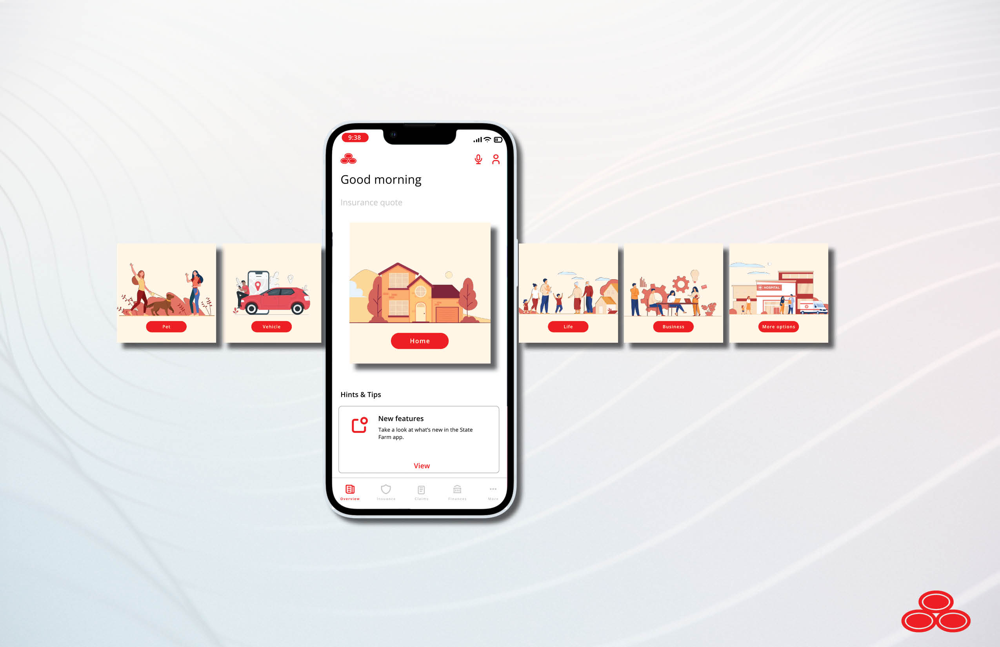
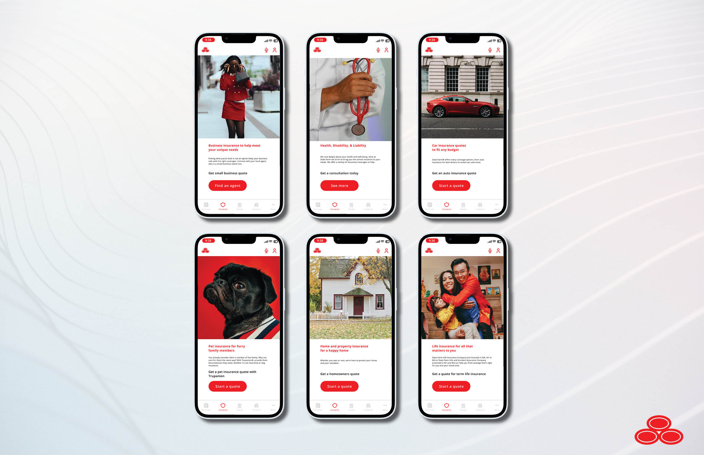

Project Overview
State Farm Insurance, a leading insurance provider, approached us with the goal of enhancing their mobile app to better showcase the variety of insurance coverages they offer. The primary objective of this project is to create an engaging and user-friendly app feature that educates existing and potential customers about the diverse range of insurance products State Farm provides. The new feature should facilitate easy navigation, offer relevant information, and encourage users to explore and purchase insurance coverage.
Problem Statement
State Farm's existing app lacked a comprehensive and user-friendly feature to showcase their extensive range of insurance products. Users often found it challenging to discover and understand the full spectrum of offerings, leading to missed opportunities for cross-selling and upselling.
Project Goals
- Enhance Discovery: Create a feature that helps users easily discover the full range of insurance products offered by State Farm.
- Increase Engagement: Encourage users to explore different insurance coverage options through an engaging and informative experience.
- Boost Conversion: Drive conversions by guiding users towards the purchase of suitable insurance policies.
User Research
User Persona
Prospective Policyholder (Sarah):
- Demographics: 30-45 years old, tech-savvy, and often on the move.
- Goals: Understand insurance options, compare coverage, and make an informed choice.
Existing Policyholder (John):
- Demographics: 40-60 years old, loyal to State Farm.
- Goals: Access policy details, explore additional coverage options, and potentially upgrade policies.
User Research Findings
- Users want a simple and intuitive way to explore different insurance products.
- The majority of users prefer visuals (infographics, videos) to understand complex insurance offerings.
- Users need clear guidance on how to contact State Farm agents for personalized consultations.
Design Approach
Key Features of the Showcase Feature
- Product Cards: Visually appealing cards for each insurance product, highlighting key features.
- Interactive Visuals: Infographics and videos explaining insurance concepts and benefits.
- Get a quote:Easy access to State Farm agents for a personalized quote.
Wireframes and Prototype


Key Metrics for Success
- Engagement Rate: Measure the number of users interacting with the showcase feature.
- Conversion Rate: Track the percentage of users who explore and purchase insurance coverage.
- User Feedback: Gather and analyze user feedback to make necessary improvements.
Conclusion
The State Farm Insurance Coverage Showcase feature aims to create an enhanced user experience, enabling users to easily explore, understand, and purchase insurance coverage. By addressing the problem of limited product discovery and engagement, we intend to boost user satisfaction and State Farm's revenue streams. This case study will be updated with the results and outcomes of the project following the launch.